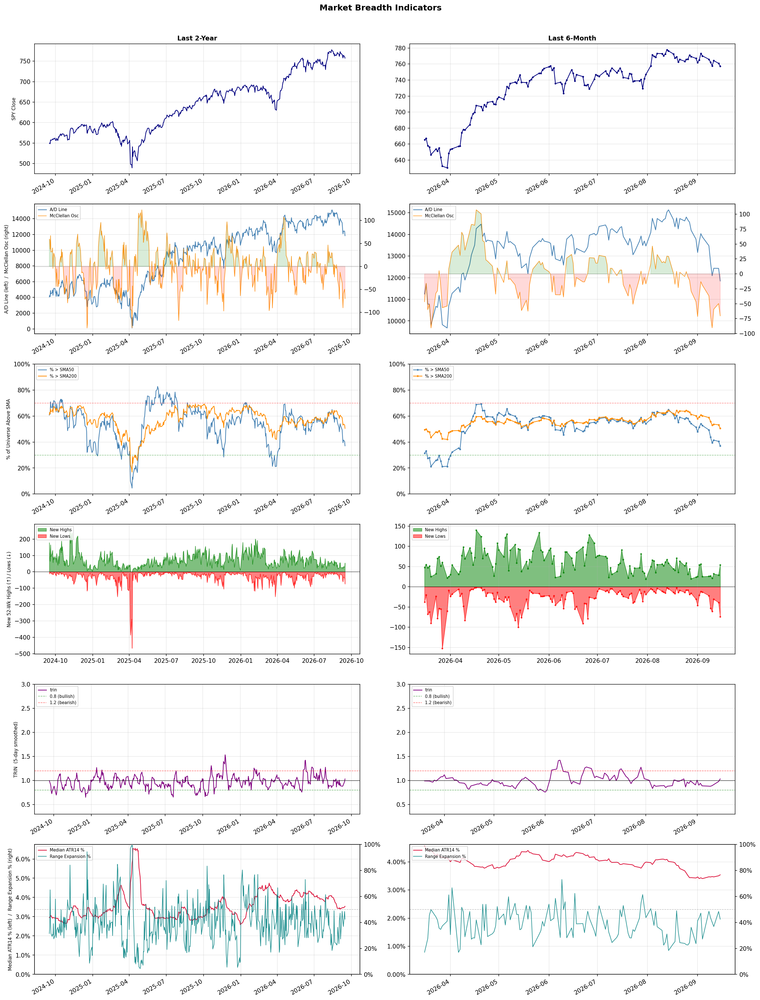

A daily market breadth and sector rotation report for active investors
| Item | Read |
|---|---|
| Regime | Defensive |
| Risk posture | Defensive |
| Universe | 1,325 stocks tracked · 54 new 52-week highs · 30 active swing setups |
| Breadth | only 37.1% of tracked stocks are above SMA50, new lows exceed new highs (74 vs 54), McClellan oscillator (breadth momentum) is negative at -70.3 |
| Leadership | Diagnostics & Research, Oil & Gas Refining & Marketing, and Oil & Gas Integrated |
| Weakest groups | Footwear & Accessories, Utilities - Independent Power Producers, and Solar |
Use this report to prioritize research and chart review; validate entries, stops, liquidity, earnings, and risk before acting.
| Item | Read |
|---|---|
| Primary read | Defensive regime with Defensive risk posture. |
| Research queue | NEO, WGS, PSNL, RVTY, OPK |
| Leadership focus | Diagnostics & Research, Oil & Gas Refining & Marketing, and Oil & Gas Integrated |
| Caution list | Footwear & Accessories, Utilities - Independent Power Producers, and Solar |
| Review prompt | Check extension risk, chart location, fundamentals, valuation, and earnings before using any research row. |
| Item | Read |
|---|---|
| Primary read | 4 active risk warnings; use screen output as watchlist input only. |
| Bullish screens | NEO, NTRA, RVTY, CVE, YPF |
| Bearish screens | ARDX, IONS, RARE, PWP, VNET |
| Alerts / levels | Automated trigger, stop, ATR, liquidity, reward/risk, and event-risk levels are pending future enrichment. |
| Review prompt | Open the linked chart, define trigger and invalidation, then check liquidity and event risk independently. |
Risk Posture: Defensive — screen backdrop favors caution; require independent risk review before new exposure
Metric context: McClellan below -50 = elevated selling pressure; below -100 = washout territory. Range Expansion = share of stocks with daily range above their 20-day average. Signal Density = share of tracked names appearing in signal screens.
| Breadth Date | % > SMA50 | % > SMA200 | New Highs | New Lows | McClellan | Median Range | Avg Range | Median ATR14 | Range Expansion | Signal Density |
|---|---|---|---|---|---|---|---|---|---|---|
| 2026-09-15 | 37.1% | 50.5% | 54 | 74 | -70.3 | 3.0% | 3.5% | 3.5% | 42.5% | 2.6% |

Prior comparison date: September 14, 2026
| Metric | Prior | Current | Change |
|---|---|---|---|
| Regime | Defensive | Defensive | unchanged |
| Risk Posture | Defensive | Defensive | unchanged |
| % > SMA50 | 40.5% | 37.1% | -3.4 pts |
| % > SMA200 | 53.3% | 50.5% | -2.8 pts |
| New Highs | 29 | 54 | +25 |
| New Lows | 39 | 74 | -35 |
Top-10 industries entering: none. Top-10 industries leaving: none. New multi-signal long setups: APA, CNQ, CRWD, CVE, DT, DXYZ, EOG, ERO, ESTC. New multi-signal short setups: IONS.
| Status | Tickers | Read |
|---|---|---|
| Added | APA, CNQ, CRWD, CVE, DT, DXYZ, EOG, ERO | New technical screen matches vs prior report. |
| Removed | ARIS, ASPI, AU, AVAH, BBY, BEPC, BTG, BXMT | No longer present in today's technical screen matches. |
| Still Active | ARDX, CRBG, DBX, EQH, MPT, PWP, VOD, VZ | Appeared in both current and prior reports. |
| Promoted | none | Model Screen Score improved by at least 15 points. |
| Downgraded | PWP | Model Screen Score declined by at least 15 points. |
| Direction | Industry | ETF | Prior Rank | Current Rank | Days | Rank Change |
|---|---|---|---|---|---|---|
| Rose | Agricultural Inputs | N/A | 80 | 6 | 28 | +74 |
| Rose | Gold | GDX | 74 | 7 | 42 | +67 |
| Rose | Grocery Stores | N/A | 85 | 29 | 35 | +56 |
| Rose | Healthcare Plans | IHF | 70 | 17 | 35 | +53 |
| Rose | Capital Markets | KCE | 77 | 26 | 28 | +51 |
Bull: The Agricultural Inputs sector is experiencing rising relative strength primarily due to increasing investor confidence in agricultural stocks, as highlighted by recent positive coverage from outlets like The Motley Fool and US News Money, which identify top stocks for 2026. Additionally, the sector's resilience amid broader market fluctuations, as noted by Morningstar, suggests that demand for agricultural inputs remains robust, driven by ongoing global food supply challenges and the need for sustainable farming practices, further bolstered by specific stock rallies like Corteva's 2.17% increase.
Bear: While the recent positive coverage and rising relative strength in the Agricultural Inputs sector may suggest investor confidence, it is crucial to consider the underlying challenges facing the industry. Factors such as volatile commodity prices, increasing regulatory pressures on fertilizers and pesticides, and the potential for economic downturns impacting farmer purchasing power could undermine growth prospects. Furthermore, the focus on sustainable farming practices may lead to higher costs and reduced margins for agricultural input companies, which could dampen their long-term profitability despite short-term rallies.
Verdict: The Agricultural Inputs sector's rising relative strength is fundamentally driven by heightened investor confidence stemming from positive market coverage and a robust demand for sustainable farming solutions amid global food supply challenges. However, key risks include volatile commodity prices and increasing regulatory pressures, which could adversely affect profitability and farmer purchasing power, necessitating a cautious approach to investment in this sector.
Sources: Google News
Bull: Gold is likely experiencing a rise in relative strength due to increasing market uncertainty and the potential for lower interest rates, which can enhance gold's appeal as a non-yielding asset. Recent headlines indicate a focus on the relationship between gold and yields, suggesting that as investors seek safe-haven assets amid economic volatility, gold ETFs like GDX could benefit from increased demand. Additionally, the discussion around gold versus silver investments highlights a growing preference for gold as a more stable store of value in uncertain market conditions.
Bear: While the bull analyst emphasizes the appeal of gold as a safe-haven asset amid economic uncertainty, recent outflows from the GDX ETF suggest that investor sentiment may be shifting away from gold, indicating a lack of confidence in its ability to maintain value. Furthermore, with rising interest rates potentially on the horizon as central banks combat inflation, the opportunity cost of holding non-yielding assets like gold increases, making it less attractive compared to interest-bearing investments. This combination of outflows and potential rate hikes poses significant headwinds for gold and gold mining stocks.
Verdict: The rising trend in the gold industry is primarily driven by heightened market uncertainty and the potential for lower interest rates, which enhance gold's appeal as a safe-haven asset. However, the key risk lies in the potential for rising interest rates as central banks combat inflation, which could diminish gold's attractiveness compared to interest-bearing investments and lead to further outflows from gold ETFs. Investors should closely monitor interest rate developments and shifts in market sentiment to gauge gold's future performance.
Sources: Yahoo Finance, Google News
Bull: The rising relative strength of the Grocery Stores sector can be attributed to the increasing consumer demand for essential goods, which has been highlighted by recent earnings reports such as Albertsons' Q4 performance, indicating resilience in grocery sales. Additionally, the focus on high-yield opportunities in the retail real estate sector, as seen with Supermarket Income REIT, suggests a robust investment interest in grocery-related assets, further bolstering the sector's appeal amidst a shifting economic landscape.
Bear: While the rising relative strength of the Grocery Stores sector may seem promising, it's essential to consider the potential headwinds that could undermine this growth. The increasing competition from dollar stores and convenience stores, as highlighted by recent analyses, could siphon off market share from traditional grocery retailers. Additionally, inflationary pressures and rising operational costs may erode profit margins, making it difficult for grocery chains to sustain their performance in the long term despite short-term consumer demand for essentials.
Verdict: The grocery store sector is experiencing rising strength primarily due to sustained consumer demand for essential goods, as evidenced by strong earnings reports like Albertsons' Q4 performance. However, key risks include increasing competition from dollar and convenience stores, along with inflationary pressures that could erode profit margins, necessitating a close watch on operational costs and competitive positioning to ensure long-term viability. Investors should consider these dynamics when evaluating opportunities within the sector.
Sources: Google News
Bull: The rising relative strength of Healthcare Plans can be attributed to increasing investor confidence in the sector, driven by favorable regulatory changes and strategic drug pricing initiatives highlighted in recent headlines, such as Trump's drug deals. Additionally, the positive outlook for major players like UnitedHealth and Humana, as noted in the headlines, suggests strong earnings potential and market resilience, further bolstering investor sentiment in the Healthcare Plans industry. This bullish momentum is reinforced by the overall trend of healthcare ETFs being recognized as "winners" in the current market environment, indicating a robust demand for healthcare services amidst ongoing economic uncertainties.
Bear: While the rising relative strength of Healthcare Plans may seem promising, it is essential to consider the potential negative impacts of regulatory changes and drug pricing initiatives, which could ultimately squeeze profit margins for major players. Additionally, the recent pullback of UnitedHealth and mixed outlooks for companies like Humana and Centene suggest that the sector may be facing headwinds, including increased competition and potential economic pressures that could undermine the bullish narrative surrounding healthcare ETFs.
Verdict: The rising strength of Healthcare Plans is primarily driven by increasing investor confidence fueled by favorable regulatory changes and strategic drug pricing initiatives, which enhance the earnings potential of major players like UnitedHealth and Humana. However, investors should remain cautious of the bear case risk, as potential profit margin squeezes from these same regulatory changes and increased competition could undermine the sector's growth trajectory. Therefore, while the current bullish sentiment may present opportunities, close monitoring of regulatory developments and competitive dynamics is essential for informed investment decisions.
Sources: Yahoo Finance, Google News
Bull: The Capital Markets sector, as represented by the SPDR S&P Capital Markets ETF (KCE), is likely experiencing rising relative strength due to a combination of robust investor sentiment and strategic positioning ahead of potential economic shifts, as suggested by headlines discussing the midterm mindset influencing the U.S. stock market. Additionally, the focus on profit potential in various stock sectors, highlighted by J.P. Morgan Private Bank, indicates that investors are seeking opportunities in capital markets to capitalize on growth, particularly as firms like Interactive Brokers demonstrate strong performance relative to their peers. This bullish sentiment is further supported by the ETF's recent headlines emphasizing its strength in the current market environment.
Bear: While the rising relative strength of the SPDR S&P Capital Markets ETF (KCE) may suggest positive investor sentiment, it is essential to consider the broader economic uncertainties that could undermine this optimism. The recent headlines indicating a cautious approach to AI development and the potential impact of the midterm elections on market sentiment could lead to increased volatility and risk aversion among investors. Furthermore, the performance of firms like Interactive Brokers may not be representative of the entire sector, as challenges such as regulatory pressures and changing market dynamics could hinder growth for many capital markets companies.
Verdict: The Capital Markets sector is experiencing rising relative strength driven by strong investor sentiment and strategic positioning for potential economic shifts, with firms like Interactive Brokers showcasing robust performance. However, key risks remain, particularly from broader economic uncertainties and regulatory pressures that could lead to increased volatility and risk aversion among investors. It is crucial for investors to monitor these external factors closely while considering opportunities in the sector.
Sources: Yahoo Finance, Google News
| Direction | Industry | ETF | Prior Rank | Current Rank | Days | Rank Change |
|---|---|---|---|---|---|---|
| Fell | Airlines | N/A | 13 | 80 | 42 | -67 |
| Fell | Travel Services | N/A | 6 | 71 | 42 | -65 |
| Fell | Leisure | N/A | 16 | 74 | 42 | -58 |
| Fell | Semiconductor Equipment & Materials | SOXX | 25 | 81 | 42 | -56 |
| Fell | Uranium | URA | 20 | 70 | 7 | -50 |
Bear: While some analysts are optimistic about a rebound in the airline industry by 2026, the persistent issues of economic uncertainty, rising operational costs, and fluctuating fuel prices pose significant risks that could hinder recovery. Additionally, the declining relative strength trend suggests that investor confidence is waning, and the cautious tone in multiple headlines indicates that many are questioning the viability of a near-term recovery, which could lead to further volatility and underperformance in airline stocks.
Bull: The airlines industry is currently experiencing a decline in relative strength due to ongoing concerns about economic uncertainty and rising operational costs, which are highlighted in recent headlines discussing the timing of a potential rebound. Factors such as fluctuating fuel prices, labor shortages, and the impact of inflation on consumer spending are contributing to this trend, as suggested by the cautious tone in articles questioning whether it's the right time to invest in airline stocks. However, with analysts like those at The Motley Fool and Zacks highlighting strong potential for recovery in 2026, there remains a bullish sentiment for long-term investors ready to capitalize on the sector's rebound.
Verdict: The airline industry's decline is fundamentally driven by economic uncertainty, rising operational costs, and fluctuating fuel prices, which have eroded investor confidence and raised concerns about near-term recovery. The key risk from the bear case is that persistent inflation and labor shortages could further exacerbate these challenges, leading to continued volatility and underperformance in airline stocks. Investors should remain cautious and consider waiting for clearer signs of stabilization before committing capital to this sector.
Sources: Google News
Bear: While the bull analyst highlights potential investment opportunities and innovation within the Travel Services sector, the overarching macroeconomic environment poses significant headwinds that cannot be overlooked. Rising interest rates and persistent inflation are likely to suppress consumer discretionary spending, leading to a contraction in travel demand as consumers prioritize essential expenses over vacations. Additionally, the focus on undervalued stocks suggests a lack of confidence in the sector's immediate recovery, as investors may be seeking safety in more stable industries rather than betting on a rebound in travel services.
Bull: The Travel Services sector is currently experiencing a decline in relative strength due to macroeconomic factors such as rising interest rates and inflation, which can dampen consumer spending on discretionary items like travel. Additionally, the headlines indicate a focus on undervalued stocks and investment opportunities for 2026, suggesting that investors may be cautious and reallocating capital towards more stable sectors or undervalued assets, as seen in the discussions around the best travel and tourism stocks. Furthermore, the emergence of innovative solutions like Webuy's AI travel card highlights a shift in consumer expectations and competition, which may be pressuring traditional travel services to adapt quickly.
Verdict: The Travel Services sector is experiencing a decline primarily due to macroeconomic pressures, including rising interest rates and inflation, which are reducing consumer discretionary spending on travel. The key risk from the bear case is that these economic headwinds may lead to a sustained contraction in travel demand, as consumers prioritize essential expenses over leisure travel. Investors should remain cautious and consider reallocating capital to more stable sectors until there are clear signs of recovery in consumer confidence and spending in the travel industry.
Sources: Google News
Bear: While some analysts highlight potential opportunities within the leisure sector, the overall decline in relative strength signals deeper, systemic issues that cannot be overlooked. Rising inflation and shifting consumer priorities are likely to persist, leading to sustained pressure on discretionary spending, which disproportionately affects leisure and recreation industries. Furthermore, the optimism surrounding specific companies like Tapestry and Deckers may not be enough to offset the broader economic headwinds, suggesting that the sector could face prolonged challenges rather than a swift recovery.
Bull: The Leisure industry is currently experiencing a decline in relative strength primarily due to broader economic pressures and shifting consumer preferences, as indicated by the headlines highlighting challenges within the sector. Factors such as rising inflation and changing discretionary spending patterns have led to a cautious consumer outlook, impacting leisure and recreation spending. However, despite these pressures, several analysts remain optimistic, identifying attractive investment opportunities within the sector, suggesting that certain companies like Tapestry and Deckers are capitalizing on niche markets and brand strength, which could drive future growth.
Verdict: The leisure industry's decline is fundamentally driven by rising inflation and changing consumer preferences, leading to reduced discretionary spending on leisure activities. The key risk from the bear case is that these economic pressures are likely to persist, creating sustained challenges for the sector, which may hinder recovery efforts even for companies with strong brand positioning like Tapestry and Deckers. Investors should remain cautious and consider focusing on companies with robust financial health and adaptability to shifting consumer trends.
Sources: Google News
Bear: While macroeconomic pressures and rising interest rates are indeed impacting growth sectors, the semiconductor equipment and materials industry faces specific structural challenges that may exacerbate its decline. The recent rally in smartphone chip stocks does not reflect a sustainable recovery for the broader sector; instead, it highlights a narrow focus on specific applications rather than a robust demand across the entire semiconductor landscape. Additionally, the ongoing supply chain disruptions and geopolitical tensions could further hinder growth prospects for semiconductor equipment companies, making them vulnerable to prolonged downturns.
Bull: The Semiconductor Equipment & Materials sector is experiencing a decline in relative strength primarily due to macroeconomic pressures, as indicated by the recent fall in the Nasdaq and the Dow's significant drop following the 10-year yield surpassing 5%. This environment of rising interest rates creates a challenging backdrop for growth-oriented sectors like semiconductors, leading to broader sell-offs, as seen with stocks like Applied Materials and FormFactor. Additionally, while smartphone chip stocks have rallied, the overall sentiment towards larger-cap technology remains weak, further contributing to the relative underperformance of the semiconductor equipment sector.
Verdict: The Semiconductor Equipment & Materials sector is experiencing a decline in relative strength primarily due to macroeconomic pressures, as indicated by the recent fall in the Nasdaq and the Dow's significant drop following the 10-year yield surpassing 5%. This environment of rising interest rates creates a challenging backdrop for growth-oriented sectors like semiconductors, leading to broader sell-offs, as seen with stocks like Applied Materials and FormFactor. Additionally, while smartphone chip stocks have rallied, the overall sentiment towards larger-cap technology remains weak, further contributing to the relative underperformance of the semiconductor equipment sector.
Sources: Yahoo Finance, Google News
Bear: While the bull analyst highlights investor caution and volatility in uranium stocks, the recent downgrades and sell-offs indicate deeper systemic issues within the nuclear sector, particularly regarding the financial viability and operational timelines of key players like NuScale and Oklo. The fact that uranium stocks rallied significantly only to shed a substantial portion of their gains suggests that the market is recognizing unsustainable valuations and a lack of clear, actionable growth prospects, especially as investor interest shifts towards more stable and profitable commodities like oil. This trend could signal a longer-term bearish sentiment for uranium investments, as confidence wanes in the sector's ability to deliver on its promises amidst increasing competition and regulatory challenges.
Bull: The recent decline in the relative strength of uranium stocks can largely be attributed to heightened investor caution surrounding the financial health and timelines of key players in the nuclear sector, as evidenced by UBS downgrading NuScale Power and Piper Sandler's negative outlook on multiple companies, including Oklo and X-Energy. Additionally, the significant volatility in uranium stocks, with a 57% rally followed by a 17% drop, suggests that valuations are being scrutinized amid broader market trends favoring other commodities, as indicated by the performance of oil and other ETF baskets in 2026.
Verdict: The recent decline in uranium stocks is primarily driven by investor concerns over the financial stability and operational timelines of key companies in the nuclear sector, exacerbated by downgrades from analysts like UBS and Piper Sandler. The key risk highlighted by the bear thesis is the potential for sustained bearish sentiment if the sector fails to demonstrate clear growth prospects and continues to face increasing competition and regulatory hurdles, prompting investors to favor more stable commodities like oil. To navigate this trend, investors should closely monitor the financial health and project timelines of uranium companies while considering reallocating to sectors with more promising fundamentals.
Sources: Yahoo Finance, Google News
| Industry | Rank | ETF | 7d | 14d | 28d | 42d | Chg 42d | Size | 20D | 60D | Composite | Active Setups |
|---|---|---|---|---|---|---|---|---|---|---|---|---|
| Diagnostics & Research | 1 | N/A | 8 | 2 | 1 | 4 | +3 | 16 | 10.7% | 39.8% | 0.970 | 0 |
| Oil & Gas Refining & Marketing | 2 | CRAK | 1 | 1 | 3 | 1 | -1 | 7 | 11.8% | 62.2% | 0.956 | 0 |
| Oil & Gas Integrated | 3 | XLE | 3 | 4 | 12 | 11 | +8 | 10 | 9.0% | 26.5% | 0.934 | 0 |
| Health Information Services | 4 | N/A | 6 | 3 | 2 | 39 | +35 | 12 | 11.5% | 39.3% | 0.932 | 0 |
| Oil & Gas E&P | 5 | XOP | 5 | 5 | 14 | 42 | +37 | 26 | 9.1% | 25.6% | 0.912 | 0 |
| Agricultural Inputs | 6 | N/A | 7 | 7 | 80 | 75 | +69 | 5 | 14.3% | 15.1% | 0.841 | 0 |
| Gold | 7 | GDX | 4 | 10 | 16 | 74 | +67 | 25 | 1.2% | 11.9% | 0.840 | 1 |
| Medical Care Facilities | 8 | IHF | 18 | 16 | 8 | 30 | +22 | 9 | 0.5% | 22.3% | 0.803 | 0 |
| Steel | 9 | SLX | 13 | 27 | 26 | 12 | +3 | 5 | 6.0% | 11.5% | 0.798 | 0 |
| Oil & Gas Midstream | 10 | AMLP | 9 | 11 | 19 | 43 | +33 | 22 | 3.7% | 12.8% | 0.774 | 0 |
Rank columns (7d–42d) show the industry's rank that many trading days ago — lower is stronger. Chg 42d = rank change vs 42 trading days ago — positive means the industry moved up. 20D and 60D are the mean stock return within the industry over that period. Active Setups: count of today's swing-trade candidates from this industry appearing across all signal screens.
| Industry | Rank | ETF | 7d | 14d | 28d | 42d | Chg 42d | Size | 20D | 60D | Composite | Active Setups |
|---|---|---|---|---|---|---|---|---|---|---|---|---|
| Footwear & Accessories | 87 | N/A | 87 | 87 | 85 | 71 | -16 | 5 | -14.0% | -25.0% | 0.035 | 0 |
| Utilities - Independent Power Producers | 86 | XLU | 37 | 81 | 86 | 88 | +2 | 5 | -10.0% | -19.4% | 0.096 | 0 |
| Solar | 85 | TAN | 86 | 88 | 88 | 80 | -5 | 8 | -9.4% | -33.4% | 0.103 | 0 |
| Building Products & Equipment | 84 | XHB | 81 | 79 | 66 | 49 | -35 | 8 | -11.3% | -12.7% | 0.125 | 0 |
| Electrical Equipment & Parts | 83 | XLI | 73 | 86 | 83 | 84 | +1 | 12 | -13.7% | -37.6% | 0.125 | 1 |
| Specialty Industrial Machinery | 82 | N/A | 56 | 82 | 70 | 63 | -19 | 21 | -13.7% | -18.4% | 0.136 | 0 |
| Semiconductor Equipment & Materials | 81 | SOXX | 68 | 77 | 39 | 25 | -56 | 17 | -24.3% | -30.1% | 0.147 | 0 |
| Airlines | 80 | N/A | 85 | 84 | 65 | 13 | -67 | 8 | -11.6% | -16.9% | 0.152 | 0 |
| Aerospace & Defense | 79 | ITA | 80 | 78 | 31 | 76 | -3 | 26 | -19.3% | -19.9% | 0.152 | 1 |
| Apparel Manufacturing | 78 | N/A | 82 | 68 | 72 | 38 | -40 | 6 | -10.0% | -12.4% | 0.164 | 0 |
Rank columns (7d–42d) show the industry's rank that many trading days ago — lower is stronger. Chg 42d = rank change vs 42 trading days ago — positive means the industry moved up. 20D and 60D are the mean stock return within the industry over that period. Active Setups: count of today's swing-trade candidates from this industry appearing across all signal screens.
These are research candidates from top-ranked stocks, capped at five names per industry to avoid over-concentration. Returns shown (60D, 120D, 250D) are historical — they reflect where prices have already moved, not forward expectations. Extension Risk flags names that may require extra patience or a better entry point. They are not buy signals.
Chart: TV = TradingView chart (opens in browser); PDF = local chart file (if downloaded).
| Ticker | Name | Industry | Industry Rank | Market Cap | 60D Hist | 120D Hist | 250D Hist | Extension Risk | Research Reason | Chart |
|---|---|---|---|---|---|---|---|---|---|---|
| NEO | NeoGenomics | Diagnostics & Research | 1 | N/A | 69.7% | 140.3% | 136.4% | Extended | Top-ranked in industry; extended | TV |
| WGS | GeneDx Holdings | Diagnostics & Research | 1 | N/A | 60.4% | 37.8% | -22.0% | Extended | Top-ranked in industry; extended | TV |
| PSNL | Personalis | Diagnostics & Research | 1 | N/A | 52.8% | 106.9% | 174.3% | Extended | Top-ranked in industry; extended | TV |
| RVTY | Revvity | Diagnostics & Research | 1 | N/A | 40.3% | 60.5% | 64.8% | Constructive | Top-ranked in industry | TV |
| OPK | Opko Health | Diagnostics & Research | 1 | N/A | 10.6% | 38.9% | 12.9% | Constructive | Top-ranked in industry | TV |
| DINO | HF Sinclair | Oil & Gas Refining & Marketing | 2 | N/A | 75.1% | 85.1% | 119.9% | Extended | Top-ranked in industry; extended | TV |
| MPC | Marathon Petroleum | Oil & Gas Refining & Marketing | 2 | N/A | 69.6% | 69.5% | 128.3% | Extended | Top-ranked in industry; extended | TV |
| VLO | Valero Energy | Oil & Gas Refining & Marketing | 2 | N/A | 68.7% | 65.7% | 149.3% | Extended | Top-ranked in industry; extended | TV |
| PSX | Phillips 66 | Oil & Gas Refining & Marketing | 2 | N/A | 60.3% | 45.7% | 105.0% | Extended | Top-ranked in industry; extended | TV |
| UGP | Ultrapar Participacoes | Oil & Gas Refining & Marketing | 2 | N/A | 59.6% | 45.1% | 94.9% | Extended | Top-ranked in industry; extended | TV |
| EQNR | Equinor | Oil & Gas Integrated | 3 | N/A | 42.7% | 16.8% | 94.3% | Constructive | Top-ranked in industry | TV |
| PBR | Petroleo Brasileiro SA Petrobras | Oil & Gas Integrated | 3 | N/A | 33.8% | 15.0% | 75.5% | Constructive | Top-ranked in industry | TV |
| SU | Suncor Energy | Oil & Gas Integrated | 3 | N/A | 30.7% | 13.6% | 70.6% | Constructive | Top-ranked in industry | TV |
| BP | BP PLC | Oil & Gas Integrated | 3 | N/A | 21.6% | 7.3% | 43.4% | Constructive | Top-ranked in industry | TV |
| YPF | YPF SA | Oil & Gas Integrated | 3 | N/A | 14.2% | 35.4% | 107.9% | Constructive | Top-ranked in industry | TV |
| TXG | 10x Genomics | Health Information Services | 4 | N/A | 114.0% | 275.5% | 466.6% | Very extended | Top-ranked in industry; very extended | TV |
| VEEV | Veeva Systems | Health Information Services | 4 | N/A | 73.9% | 48.9% | -2.7% | Extended | Top-ranked in industry; extended | TV |
| SDGR | Schrodinger | Health Information Services | 4 | N/A | 47.5% | 101.0% | 21.7% | Extended | Top-ranked in industry; extended | TV |
| HTFL | Heartflow | Health Information Services | 4 | N/A | 43.7% | 72.8% | 54.8% | Constructive | Top-ranked in industry | TV |
| TEM | Tempus AI | Health Information Services | 4 | N/A | 35.4% | 41.0% | -20.9% | Constructive | Top-ranked in industry | TV |
These are technical screen matches from existing signal files. They are not trade recommendations. Trigger, stop, ATR, liquidity, reward/risk, and event risk still require separate validation until those inputs are available.
Model Screen Score is weighted by signal count, industry rank, freshness, and setup type. It is not a probability of profit, expected return, or suitability rating. Industry cap: max 3 candidates per industry.
Signal glossary: Momentum Pullback = stock in an uptrend that has pulled back 10–30% and shows re-entry conditions. MA Compression = short- and long-term moving averages converging, often preceding a directional move. Three-Day Up/Down = three consecutive closes in the same direction. New 52Wk High/Low = price reached a new annual extreme.
Chart: TV = TradingView chart (opens in browser); PDF = local chart file (if downloaded).
| Ticker | Industry | Setups | Close | Industry Rank | Signal Count | Model Screen Score | Reason | Chart |
|---|---|---|---|---|---|---|---|---|
| NEO | Diagnostics & Research | New 52Wk High; Three-Day Up | 18.89 | 1 | 2 | 100 | Multi-signal; top industry breakout | TV |
| NTRA | Diagnostics & Research | New 52Wk High; Three-Day Up | 350.78 | 1 | 2 | 100 | Multi-signal; top industry breakout | TV |
| RVTY | Diagnostics & Research | New 52Wk High; Three-Day Up | 140.19 | 1 | 2 | 100 | Multi-signal; top industry breakout | TV |
| CVE | Oil & Gas Integrated | New 52Wk High; Three-Day Up | 33.92 | 3 | 2 | 100 | Multi-signal; top industry breakout | TV |
| YPF | Oil & Gas Integrated | New 52Wk High; Three-Day Up | 57.61 | 3 | 2 | 100 | Multi-signal; top industry breakout | TV |
| SDGR | Health Information Services | New 52Wk High; Three-Day Up | 23.25 | 4 | 2 | 93 | Multi-signal; top industry breakout | TV |
| APA | Oil & Gas E&P | New 52Wk High; Three-Day Up | 47.41 | 5 | 2 | 93 | Multi-signal; top industry breakout | TV |
| CNQ | Oil & Gas E&P | New 52Wk High; Three-Day Up | 51.55 | 5 | 2 | 93 | Multi-signal; top industry breakout | TV |
| EOG | Oil & Gas E&P | New 52Wk High; Three-Day Up | 153.74 | 5 | 2 | 93 | Multi-signal; top industry breakout | TV |
| CRWD | Software - Infrastructure | New 52Wk High; Three-Day Up | 242.49 | 11 | 2 | 85 | Multi-signal; new-high strength | TV |
| DBX | Software - Infrastructure | New 52Wk High; Three-Day Up | 37.63 | 11 | 2 | 85 | Multi-signal; new-high strength | TV |
| OKTA | Software - Infrastructure | New 52Wk High; Three-Day Up | 190.45 | 11 | 2 | 85 | Multi-signal; new-high strength | TV |
| DT | Software - Application | New 52Wk High; Three-Day Up | 55.17 | 12 | 2 | 85 | Multi-signal; new-high strength | TV |
| ESTC | Software - Application | Momentum Pullback; Three-Day Up | 85.16 | 12 | 2 | 85 | Multi-signal; pullback setup | TV |
| CRBG | Asset Management | New 52Wk High; Three-Day Up | 35.02 | 19 | 2 | 77 | Multi-signal; new-high strength | TV |
| EQH | Asset Management | New 52Wk High; Three-Day Up | 53.97 | 19 | 2 | 77 | Multi-signal; new-high strength | TV |
| VOD | Telecom Services | New 52Wk High; Three-Day Up | 17.68 | 28 | 2 | 70 | Multi-signal; new-high strength | TV |
| VZ | Telecom Services | New 52Wk High; Three-Day Up | 51.45 | 28 | 2 | 70 | Multi-signal; new-high strength | TV |
| TEVA | Drug Manufacturers - Specialty & Generic | New 52Wk High; Three-Day Up | 39.25 | 32 | 2 | 70 | Multi-signal; new-high strength | TV |
| DXYZ | Asset Management | Momentum Pullback | 30.26 | 19 | 2 | 62 | Multi-signal; pullback setup | TV |
| ERO | Copper | Momentum Pullback | 32.53 | 33 | 2 | 55 | Multi-signal; pullback setup | TV |
Bearish setups — stocks making new lows or showing persistent downside patterns. Validate carefully before acting.
| Ticker | Industry | Setups | Close | Industry Rank | Signal Count | Model Screen Score | Reason | Chart |
|---|---|---|---|---|---|---|---|---|
| ARDX | Biotechnology | New 52Wk Low; Three-Day Down | 3.40 | 25 | 2 | 47 | Multi-signal; new-low weakness | TV |
| IONS | Biotechnology | New 52Wk Low; Three-Day Down | 47.25 | 25 | 2 | 47 | Multi-signal; new-low weakness | TV |
| RARE | Biotechnology | New 52Wk Low; Three-Day Down | 13.07 | 25 | 2 | 47 | Multi-signal; new-low weakness | TV |
| PWP | Capital Markets | New 52Wk Low; Three-Day Down | 13.41 | 26 | 2 | 40 | Multi-signal; new-low weakness | TV |
| VNET | Information Technology Services | New 52Wk Low; Three-Day Down | 5.96 | 35 | 2 | 40 | Multi-signal; new-low weakness | TV |
| MPT | REIT - Healthcare Facilities | New 52Wk Low; Three-Day Down | 3.54 | 43 | 2 | 35 | Multi-signal; new-low weakness | TV |
| VIPS | Internet Retail | New 52Wk Low; Three-Day Down | 12.09 | 48 | 2 | 35 | Multi-signal; new-low weakness | TV |
| OI | Packaging & Containers | New 52Wk Low; Three-Day Down | 6.34 | 53 | 2 | 35 | Multi-signal; new-low weakness | TV |
| NB | Other Industrial Metals & Mining | New 52Wk Low; Three-Day Down | 3.56 | 59 | 2 | 35 | Multi-signal; new-low weakness | TV |
How To Use This Report
| Use | Purpose |
|---|---|
| Market map | Start with breadth, regime, risk warnings, and what changed since the prior report. |
| Industry scan | Use leading, deteriorating, rising, and declining industries to focus research. |
| Research queue | Treat long-term candidates as names for deeper fundamental, valuation, and chart review. |
| Technical review | Treat bullish and bearish screen matches as watchlist inputs that require independent trigger, stop, liquidity, and event-risk checks. |
| Source follow-up | Use chart links and source files to verify raw inputs before relying on any row. |
What This Report Is Not
| Not | Meaning |
|---|---|
| Investment advice | The report does not evaluate personal objectives, risk tolerance, tax situation, account type, or suitability. |
| Buy/sell recommendation | Named tickers are research candidates or screen matches, not recommendations to transact. |
| Price target | The report does not provide fair value estimates, targets, or expected returns. |
| Trade plan | Trigger, stop, sizing, reward/risk, liquidity, and event-risk review remain separate user work. |
| Performance claim | Model Screen Score is not validated historical performance or a forecast of future results. |
| Item | Note |
|---|---|
| Version | Daily Report Methodology v1 |
| Model Screen Score | Screen-fit rank based on signal count, industry rank, freshness, and setup type. |
| Not predictive proof | The score is not expected return, probability of profit, historical validation, or suitability analysis. |
| Industry ranks | Composite industry ranks use existing daily ranking outputs and historical rank columns when available. |
| Research candidates | Long-term rows are research candidates from ranked stocks and leading industries, with historical returns labeled as historical only. |
| Technical matches | Bullish and bearish rows are screen matches requiring independent chart, trigger, stop, liquidity, and event-risk review. |
| Source | Status | Rows | Path |
|---|---|---|---|
| Market breadth | present | 1253 | breadth_20260915.csv |
| Industry composite rankings | present | 87 | all_industry_composite_20260915.csv |
| Top ranked stocks | present | 137 | top_ranked_composite_20260915.csv |
| All ranked stocks | present | 1325 | all_stocks_composite_sorted_20260915.csv |
| Top momentum pullbacks | present | 1475 | top_momentum_pullbacks_20260915.csv |
| MA compression | present | 1475 | ma_compression_stocks_20260915.csv |
| Three-day up/down | present | 290 | three_day_up_down_stocks_20260915.csv |
| New 52-week members | present | 128 | breadth_new_52wk_members_20260915.csv |
This report is generated from automated technical screens and is for informational and research purposes only. It is not investment advice, a solicitation, or a recommendation to buy or sell any security. Past performance is not indicative of future results. You are solely responsible for your own investment decisions. Consult a licensed financial advisor before acting on any information herein.